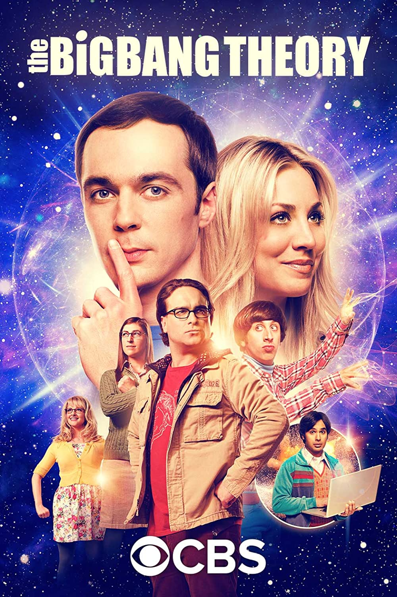

The Big Bang Theory, Chuck Lorre ve Bill Prady tarafından yaratılmış Amerikan durum komedisi dizidir.
İlk kez 24 Eylül 2007'de CBS'de yayınlanmıştır.
Kaliforniya Teknoloji Enstitüsü'nde çalışan iki üstün zekalı ev arkadaşı olan deneysel fizikçi Leonard Hofstadter
ve teorik fizikçi Sheldon Cooper, garson ve oyunculuğa hevesli sarışın karşı komşuları Penny,
Leonard ve Sheldon'ın doktorası olmayan uzay mühendisi tuhaf iş arkadaşları Howard Wolowitz ve
yine aynı yerde çalışan astrofizikçi Rajesh Koothrappali oluşan 5 karakter ile oldukça güzel bir durum komedisi dizisidir.